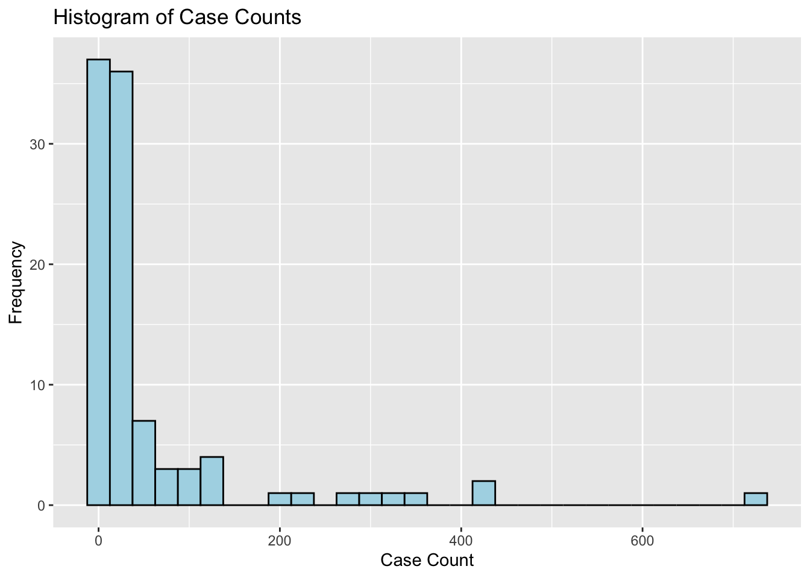
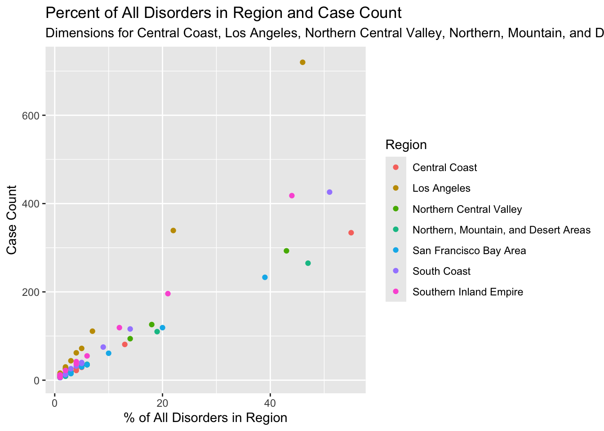

The Screening Disorders by California Region data set is a table from an aggregated (2009-2019) public data on newborn screening disorders. The table used in this analysis contains counts of disorders that have been diagnosed by the California Newborn Screening Program.
# Load packages #library(tidyverse)
── Attaching core tidyverse packages ──────────────────────── tidyverse 2.0.0 ──
✔ dplyr 1.1.4 ✔ readr 2.1.5
✔ forcats 1.0.0 ✔ stringr 1.5.1
✔ ggplot2 3.5.2 ✔ tibble 3.3.0
✔ lubridate 1.9.4 ✔ tidyr 1.3.1
✔ purrr 1.1.0
── Conflicts ────────────────────────────────────────── tidyverse_conflicts() ──
✖ dplyr::filter() masks stats::filter()
✖ dplyr::lag() masks stats::lag()
ℹ Use the conflicted package (<http://conflicted.r-lib.org/>) to force all conflicts to become errors
library(gtsummary)# Load data #nsdca <-read_csv(here::here("data", "raw", "nsdca.csv"))
Rows: 102 Columns: 5
── Column specification ────────────────────────────────────────────────────────
Delimiter: ","
chr (3): California Region, Disease Type, Percent
of All
Disorders
in Region
dbl (2): Case
Count, Number
Screened
ℹ Use `spec()` to retrieve the full column specification for this data.
ℹ Specify the column types or set `show_col_types = FALSE` to quiet this message.
# Clean column names #nsdca <- nsdca %>%rename(region =`California Region`,disease_type =`Disease Type`,cases =`Case\nCount`,screened =`Number\nScreened`,percent_region =`Percent\nof All\nDisorders\nin Region` ) %>%# Convert percent column to numeric & create factor for categorical variable: region #mutate(percent_region =as.numeric(percent_region),region =factor(region, labels =c("Central Coast", "Los Angeles", "Northern Central Valley", "Northern, Mountain, and Desert Areas", "San Francisco Bay Area", "South Coast", "Southern Inland Empire")))
Warning: There was 1 warning in `mutate()`.
ℹ In argument: `percent_region = as.numeric(percent_region)`.
Caused by warning:
! NAs introduced by coercion
# Remove rows with missing values #nsdca_cleaned <- nsdca %>%filter(!is.na(percent_region))# Display the structure of the cleaned data frame #str(nsdca_cleaned)
# Save the cleaned data to a new CSV file #write_csv(nsdca_cleaned,here::here("data", "clean", "cleaned_nsdca.csv"))# Save the complete-case data #write_rds(nsdca_cleaned, here::here("data", "clean", "nsdca_cleaned_complete.rds"))
Create a {gtsummary} table of descriptive statistics about your data (1 pt)
tbl_summary( nsdca_cleaned,by = region,include =c(region, cases, screened, percent_region),label =list( cases ~"Case Count", screened ~"Number Screened", percent_region ~"Percent of All Disorders in Region" )) %>%add_overall() %>%modify_table_styling(columns = label,rows = label =="Percent of All Disorders in Region",footnote ="see https://catalog.data.gov/dataset/newborn-screening-disorders-426e4")# The above is a cross-reference and a table shows the descriptive statistics for 'Case Count', 'Number Screened', and 'Percent of All Disorders in Region' including an overall column. ## Inline descriptive statistics #table1 <-tbl_summary( nsdca_cleaned,by = region,include =c(region, cases, screened, percent_region)) |>add_overall(last =TRUE)inline_text(table1, variable ="percent_region", column ="stat_1")
Table 1: Descriptive Statistics for Case Count, Number Screened, and Percent of All Disorders in Region
Characteristic
Overall
N = 991
Central Coast
N = 131
Los Angeles
N = 161
Northern Central Valley
N = 161
Northern, Mountain, and Desert Areas
N = 131
San Francisco Bay Area
N = 121
South Coast
N = 151
Southern Inland Empire
N = 141
Case Count
18 (10, 40)
19 (10, 29)
27 (13, 67)
12 (7, 33)
15 (10, 35)
24 (13, 48)
14 (8, 40)
17 (11, 55)
Number Screened
600,705 (531,584, 849,368)
557,240 (557,240, 557,240)
1,372,349 (1,372,349, 1,372,349)
600,705 (600,705, 600,705)
531,584 (531,584, 531,584)
569,659 (569,659, 569,659)
849,368 (849,368, 849,368)
832,462 (832,462, 832,462)
Percent of All Disorders in Region2
2 (1, 5)
3 (2, 5)
2 (1, 5)
2 (1, 5)
3 (2, 6)
4 (2, 8)
2 (1, 5)
2 (1, 6)
1 Median (Q1, Q3)
2 see https://catalog.data.gov/dataset/newborn-screening-disorders-426e4
Descriptive statistics for the Case Count, Number Screened, and California Region variables are presented in Table 1.
There were 99 California regions.
Fit a regression and present well-formatted results from the regression (1 pt)
linear_model <-lm(cases ~ screened, data = nsdca_cleaned)# Present the regression results using {gtsummary} #tbl_regression(linear_model, intercept =TRUE, label =list(screened ~"Number Screened"))
Table 2: Linear Regression results
Characteristic
Beta
95% CI
p-value
(Intercept)
-0.88
-52, 50
>0.9
Number Screened
0.00
0.00, 0.00
0.013
Abbreviation: CI = Confidence Interval
The results shown in Table 2 indicate that the number of screened newborns is a statistically significant predictor of the number of cases.
Create a figure (1 pt)
histogram_figure <-ggplot(nsdca_cleaned, aes(x = cases)) +geom_histogram(binwidth =25, fill ="lightblue", color ="black") +labs(title ="Histogram of Case Counts",x ="Case Count",y ="Frequency" )print(histogram_figure)

Figure 1: Case Count Distribution
The distribution of Case Count is right-skewed, with most regions having a relatively low number of cases and a few having a high number of cases, as shown in Figure 1.
ggplot(data = nsdca_cleaned,mapping =aes(x = percent_region,y = cases,color = region)) +geom_point() +labs(title ="Percent of All Disorders in Region and Case Count",subtitle ="Dimensions for Central Coast, Los Angeles, Northern Central Valley, Northern, Mountain, and Desert Areas, San Francisco Bay Area, South Coast, Southern Inland Empire" ,x ="% of All Disorders in Region", y ="Case Count",color ="Region")# Cross-reference #total_regions <-n_distinct(nsdca_cleaned$region)print(total_regions)
[1] 7

Figure 2: Percent of All Disorders in Region and Case Count Distribution
Figure 2 is a scatter plot of the Percent of All Disorders in Region and Case Count variables across 7 regions.
Write and use a function that does something with the data (1 pt)
# A function that calculates the mean and standard deviation for a given numeric variable #calculate_stats <-function(data, variable) { data %>%summarise(mean =mean({{ variable }}, na.rm =TRUE),sd =sd({{ variable }}, na.rm =TRUE) )}# Functions to calculate stats for 'Case Count' and 'Number Screened' and store the results in a list #case_stats <-calculate_stats(nsdca_cleaned, cases)case_stats
The regression analysis revealed that the Case Count variable was a significant predictor of the outcome, with a p-value of p=0.013.
Read in a data set and save a file (can be data, table, figure, etc.) Use the {here} package every time you refer to file paths (at least twice) (1 pt)
Commit and push your work to GitHub as you go (1 pt)
In a README file, include any notes necessary for us to easily reproduce your analysis (e.g., “Run script.R and then render document.qmd”) as well as some information about your data (1 pt)